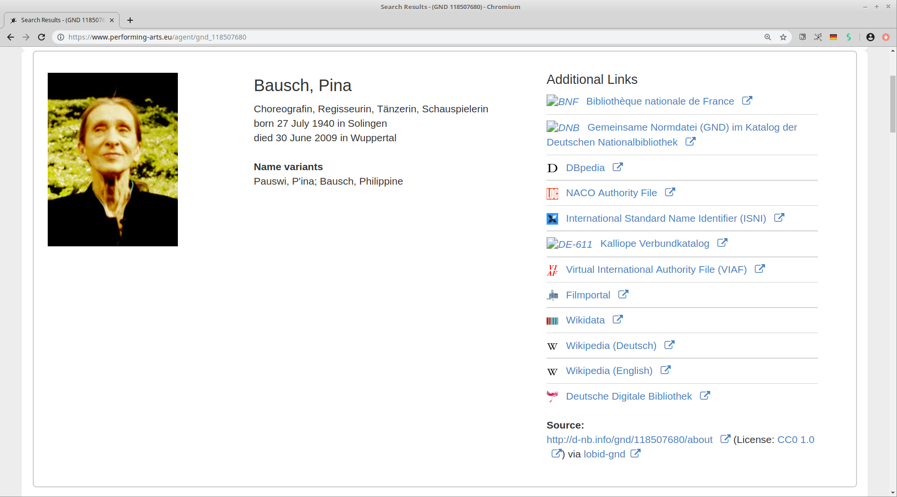

Offene Infrastruktur
Was heißt das?
Adrian Pohl /
@acka47
Offene Infrastruktur, Hochschulbibliothekszentrum NRW (hbz)
Köln, 2019-11-22
Diese Präsentation:
http://slides.lobid.org/beirat2019/

Agenda
- lobid: Nutzungsbeispiele
- Das sagen die lobid-Nutzer*innen
- Was steckt hinter lobid?
- Was macht die Gruppe noch?

lobid steht für Linking Open Bibliographic Data
seit fast zehn Jahren die zentrale Komponente der offenen Infrastruktur im hbz
stellt intuitive Rechercheoberflächen und webbasierte Schnittstellen bereit
lobid – ein zentraler Knoten bibliothekarischer Dateninfrastruktur

1. lobid: Nutzungsbeispiele

Verbundbibliotheken auf hbz-Website

Basiert auf lobid-Organisationsdaten
VZG-Standortverzeichnis

Basiert auf lobid-Organisationsdaten

Edoweb und Fachrepositorium Lebenswisschenschaften (FRL)


Enge Integration der lobid-Verbunddaten und des lobid-Datenmodells
In Publisso auch GND-ID-Lookup via lobid
GND-Lookup im Fachrepositorium Lebenswissenschaften


NWBib
Webanwendung, die nahezu vollständig auf lobid-Daten basiert
Nutzt das NWBib-Subset in den lobid-Verbunddaten
Informationen zu besitzenden Bibliotheken aus lobid-Organisationsdaten
Themenvorschläge auf Basis von lobid-gnd
NWBib-Suchergebnisliste

Anfrage gegen das NWBib-Subset in lobid-Verbunddaten

Informationen zu besitzenden Bibliotheken (Name, URL, Standort) werden aus lobid geladen

Bibliothekskatalog des Juristischen Seminars der ULB Bonn

Basiert auf täglich aktualisierten lobid-Daten


Discovery-Index der UB Dortmund

Daten zu den Beständen der UB & einiger umliegender Bibliotheken werden täglich von lobid geholt, transformiert und in den Index geladen

Virtuelle Deutsche Landesbibliographie

Seit April 2018 ist nwbib.de in die VDL integriert.

Kalliope

Anzeige von externen Links (z.B. Wikipedia) aus lobid-gnd auf Personenseiten

Abgleich und Anreicherung lokaler Archivdaten mit der GND
 Unter Nutzung von OpenRefine und der entsprechenden lobid Reconciliation API
Unter Nutzung von OpenRefine und der entsprechenden lobid Reconciliation API
Infoboxen zu Personen aus der GND
 Außerdem Nutzung der lobid Reconciliation API zum Mappen großer Mengen von Personendaten auf die GND
2. Das sagen die lobid-Nutzer*innen


"Für mich ist lobid die Rechercheoberfläche für die GND und ich empfehle den Dienst allen Kolleg*innen."
– kürzlich erhaltenes Feedback eines Kollegen aus Wien
3. Was steckt hinter lobid?
lobid
Leistungsfähige, flexible und zuverlässige Dienste
Offene & transparente Entwicklung
Kompetente & zügige Reaktion auf Fehlerberichte und Anfragen
Datenquellen und -formate

Leitmotiv "Openness"
Publikation von Daten und Software unter offen Lizenzen
Nutzung und Mitentwicklung offener (Web-)Standards
Transparente Entwicklungsprozesse
Alle Publikationen (Slides, Blog, Zeitschriftenartikel etc.) sind Open Access
Gute Dienstleistungen sind Teamarbeit

4. Was macht die Gruppe noch?
Mitarbeit in Open Source Communities
Seit kurzem ist die Gruppe Maintainer von Metafacture, eine im DACH-Raum häufig genutztes Werkzeug zur Datentransformation
Beiträge zu verschiedenen anderen Tools, z.B. OpenRefine und JSONLD-Java
Standardisierung
DINI AG KIM, z.B. OER-Metadatengruppehttps://wiki.dnb.de/display/DINIAGKIM/OER-Metadaten-Gruppe
W3C Entity Reconciliation Community Group
Learning Resource Metadata Initiative (LRMI) @DCMI
Kompetenz- und Wissensvermittlung
Vorträge
Blogbeiträge, Zeitschriftenartikel
Workshops, Seminare
Forschung und Entwicklung
lobid selbst ist aus Experimenten entstanden
Aktuelles Entwicklungsprojekt: SkoHubfür eine zukünftige dezentrale Discovery-Infrastruktur
Fragen? Gerne jetzt oder später an
semweb@hbz-nrw.de
Weiterführende Informationen
- lobid-Blog
- lobid auf Twitter
- Pohl, Adrian / Steeg, Fabian / Christoph, Pascal (2018): lobid – Dateninfrastruktur für Bibliotheken. In: Informationspraxis 4(1). https://doi.org/10.11588/ip.2018.1.52445
- Steeg, Fabian / Pohl, Adrian / Christoph, Pascal (2019): lobid-gnd – Eine Schnittstelle zur Gemeinsamen Normdatei für Mensch und Maschine. In: Informationspraxis 5(1). https://doi.org/10.11588/ip.2019.1.52673